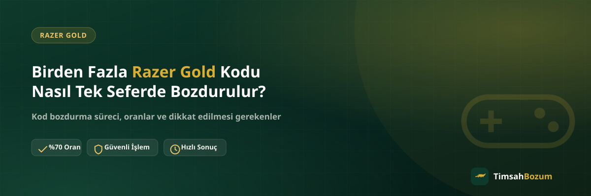

Hediye olarak gelen, oynanan oyun değiştiği için ihtiyaç kalmayan ya da farklı zamanlarda biriken Razer Gold kodları çoğu kullanıcının elinde bir veya iki tane değil, birden fazla sayıda birikebiliyor. Bu kodları tek tek ayrı işlemlerle değil, tek seferde bozdurmak hem senin hem de işlemi yürüten tarafın işini kolaylaştırır. Bu yazıda birden fazla kodu bir arada bozdururken sürecin nasıl işlediğini anlatıyoruz.
Birden Fazla Razer Gold Kodu Nasıl Bir Arada Bozdurulur?
Elindeki tüm kodları, tek bir WhatsApp mesajında birbirinden ayırt edilebilir şekilde paylaşman süreci başlatmanın en pratik yolu. Her kod kendi içinde ayrı bir ürün olarak değerlendirilir, bu yüzden hangi kodun hangi değerde olduğunu belirtmen oranın doğru hesaplanmasını kolaylaştırır. İşlem başladıktan sonra kodlar ayrı ayrı değil, toplamda tek bir süreç olarak ilerler.
Kodları Tek Mesajda Paylaşmak Neden Daha Mantıklı?
Kodları birer birer, aralıklarla paylaşmak her kod için ayrı bir konuşma başlatılmasına ve sürecin parçalara bölünmesine yol açar. Hepsini aynı mesajda, alt alta veya numaralandırılmış şekilde paylaşmak ise karşı tarafın tüm kodları bir arada görüp tek bir değerlendirme yapmasını sağlar. Bu, özellikle üç dörtten fazla kodun olduğu durumlarda zaman kazandıran bir fark oluşturur.
Kodlardan Biri Geçersizse Diğerleri Ne Olur?
Her kod ayrı bir ürün olduğu için kendi başına değerlendirilir. Kodlardan biri daha önce kullanılmış veya geçersiz çıkarsa bu durum sadece o kodu etkiler, geçerli olan diğer kodların bozdurulmasını engellemez. Bu yüzden elindeki tüm kodları paylaşmadan önce hepsinin kullanılmamış olduğundan emin olmak, sürecin baştan sorunsuz ilerlemesini sağlar; bu konuyu daha detaylı işlediğimiz Razer Gold kodu kullanılmışsa ne olur yazımıza da göz atabilirsin.
Her Kodun Oranı Aynı mı Olur?
Razer Gold bozdurma işleminde geçerli oran, kodun tutarına bakılmaksızın tüm kodlarda aynı şekilde uygulanır. Yani elindeki beş farklı tutardaki kod için beş ayrı oran hesaplanmaz, hepsi aynı güncel oran üzerinden değerlendirilir. Güncel oranı işleme başlamadan önce WhatsApp'tan teyit etmek, toplam tutarı net şekilde görebilmen için en doğru adım.
Ödeme Tek Seferde mi Yapılır?
Tüm kodlar onaylandıktan sonra süreç, her kod için ayrı ayrı değil, toplam tutar üzerinden tek bir ödeme olarak ilerler. Bu da senin için hem takip etmesi daha kolay hem de daha az adımdan geçen bir sonuç anlamına gelir. Ödeme yöntemi, diğer tüm bozum işlemlerinde olduğu gibi WhatsApp üzerinden görüşülerek belirlenir.
Kodları Hazırlarken Nelere Dikkat Etmelisin?
Her kodun karakterlerini tam ve doğru şekilde kopyaladığından emin ol; eksik veya yanlış yazılmış bir karakter o kodun işlemini geciktirir. Kodları bir not uygulamasında ya da mesaj taslağında sıralı tutman, WhatsApp'a geçtiğinde hepsini tek seferde ve karışmadan paylaşmanı kolaylaştırır. Kodu fotoğraf olarak paylaşacaksan görüntünün okunaklı olmasına, metin olarak paylaşacaksan karakterlerin birbirine karışmamasına dikkat etmek de işlemi hızlandırır.
Kaç Kod Birlikte Bozdurulabilir?
Belirli bir kod sayısı sınırı aramadan, elindeki tüm kodları aynı mesajda bir arada paylaşabilirsin. Kod sayısı arttıkça tek tek paylaşmak yerine toplu paylaşımın avantajı daha da büyür, çünkü karşı taraf tüm kodları bir kerede görüp genel bir değerlendirme yapabilir. Tutarla ilgili güncel ve kesin bilgiyi her zaman işlem öncesi WhatsApp'tan teyit etmek en sağlıklısı.
Birden Fazla Kod Nasıl Birikir?
Birden fazla Razer Gold kodunun elinde birikmesinin birkaç yaygın sebebi var: doğum günü veya özel gün hediyesi olarak farklı kişilerden gelen kodlar, bir kampanya ya da çekilişten kazanılan birden fazla kod, veya zaman içinde satın alınıp kullanılmayı unutulan kodlar. Hangi sebeple birikmiş olursa olsun, kodları tek tek değerlendirmek yerine bir arada toplayıp bozdurmak süreci sadeleştirir. Kodları biriktirdiğin süre boyunca her birinin fiziksel kartını ya da dijital teslim e-postasını sakladıysan, bozdurma öncesi hepsini bir araya getirmen tek seferlik işlemi kolaylaştırır.
Farklı Tutardaki Kodlar Bir Arada Bozdurulabilir mi?
Evet. Elindeki kodların tutarları birbirinden farklı olsa bile hepsi aynı mesajda paylaşılabilir ve aynı süreçte değerlendirilir. Örneğin elinde küçük tutarlı bir kod ile daha yüksek tutarlı bir kod varsa, ikisini ayırt edilebilir şekilde belirtmen yeterli; her kod kendi tutarına göre hesaba katılır ve toplam üzerinden tek bir sonuca ulaşılır. Bu noktada önemli olan, her kodun değerini net bir şekilde yazman, böylece toplam tutarın doğru hesaplanması için ek bir soru-cevaba gerek kalmaz.
Birden Fazla Kodun İşlemi Daha mı Uzun Sürer?
Kod sayısı arttığında işlemin uzayacağını düşünebilirsin, ama durum genelde tersi: tüm kodları tek mesajda paylaştığında süreç tek bir değerlendirme turunda ilerler, kod sayısı bu turun kendisini uzatmaz. Asıl süreyi uzatan şey kodların parça parça, farklı zamanlarda gönderilmesidir; her yeni kod geldiğinde süreç yeniden başlıyormuş gibi ele alınabilir. Bu yüzden elindeki tüm kodları hazırlayıp bir kerede paylaşmak, kod sayısı ne olursa olsun en hızlı sonucu almanın yolu.
İlgili Yazılar
- Razer Gold Kodu Kullanılmışsa Ne Olur?
- Razer Gold Kodu Nasıl Bozdurulur? Adım Adım Rehber
- Razer Gold Kod Bozdurma ile Kod Satışı Arasındaki Fark
Elinde birden fazla Razer Gold kodu varsa hazırladığın tüm kodları tek mesajda WhatsApp hattımıza paylaşarak işlemini başlatabilirsin.